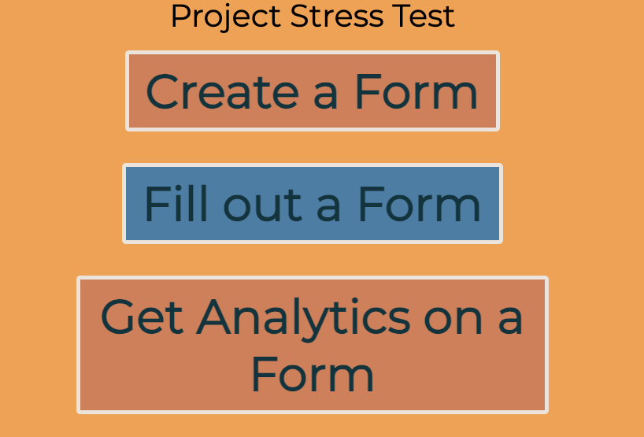
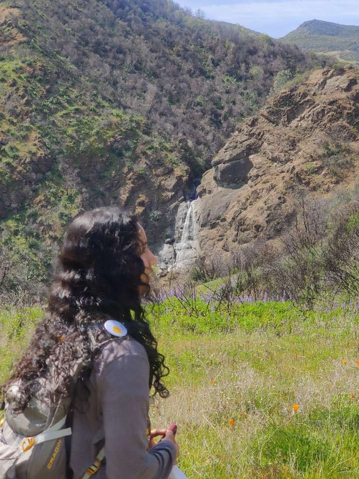

Projects
Sex Specific Contributions to Nest Building
Data analytics to derive insights about sex specific contributions to nesting in 200+ bird species. Shiny app (linked in photo) displays our final product.

Project Stress Test
This was a project built for HackDavis 2024. My team and I built a website to allow professors to gain analytics on students' mental health and wellbeing. It was completed using a Flask backend, MongoDB, LLMs, and HTML/CSS and Javascript for the front end. Feel free to try it out or read more at the link!
Machine Learning for Garbage Classification
Lead a team of 4 to build a Garbage Classifier with over 70% accuracy, building and testing models from scratch including Support Vector Machine (SVM), Random Forest Classifier, and Convolutional Neural Network (CNN). We also built a front-end implementation to call the model.
Database Building
Lead a team of 5 to build a multithreaded database system from scratch based on novel database research (L-store), a highly efficient relational database that combines efficient OLAP (Online Analytical Processing) and OLTP (Online Transactional Processing) capabilities.
Poker Bot
Won 1st place in a team of 4 in the advanced section of a Poker Bot tournament held by the AI club at UC Davis. We developed a bot to Raise (a calculated amount), Fold, Call and Check based on card strength and Texas Hold 'Em Rules.
About

Hi! My name is Meghana Manepalli. I will be graduating in June 2024 with a Bachelor’s of Science in Genetics and Genomics as well as a minor in Computer Science at UC Davis. Currently, I am looking for opportunities in Bioinformatics and Software Engineering. If you think my skills would be a good fit for your needs, please feel free to reach out!
My interdisciplinary educational background has given me a strong background in Computer Science, Data Science, and Genomics, as well as domain specific knowledge in Bioinformatics. I’m an independent worker with strong scientific communication skills, problem solving abilities, and can adapt to new environments and technology quickly. I’m passionate about my field and hope to pursue work where I can make a positive impact on the world.
Outside of schoolwork, I enjoy hiking, watching TV shows, and spending time with my two cats, Queso and Chika. Again feel free to connect with me through the contact info on this page or at mmanepalli@ucdavis.edu.
Skills
- Proficient in C/C++, Python, R, Unix
- Experience with Machine Learning, Databases, and Web Development
- Experience using Git and SVN for version control
- AWS for cloud computing and Docker virtual environments
- Experience with NGS data and Bioinformatics algorithms
- Experience using common Bioinformatics tools, including BLAST, EMBOSS, ClustalW
- Strong leadership skills
- Strong presentational skills, including speaking and creating informative visuals
Experience
Software Engineer Intern, Zumigo (July 2023 - September 2023)
-
Developed a Statistical Model
- Developed an time-series model to predict pattern of file arrival
-
Quality Assurance
- Used Postman to test company’s API
-
Database Migration
- Developed Python script to be used by other engineers in migrating databases from MySQL to MongoDB
-
UI Testing using Selenium
- Automated testing of a web app using the Selenium module from Python
Bioinformatics Research Assistant, Korf Lab (June 2021 - July 2023)
-
Intron Mediated Enhancement (“IMEter”)
- Developed and tested novel motif-finding algorithms using k-mers, position weight matrices, and regex to identify potential regulatory motifs
- Studied protein conservation amongst worm and fly proteomes using BLAST
-
Gene Finding
- Benchmarked HMM and Viterbi performance in Golang and Python to compare run-time and ease of maintainability
- Developed higher order HMMs for R-Loop finding and Gene Structure Prediction
Orientation Leader, UC Davis (September 2021)
- Led a group of ~25 freshman through orientation activities
- Gave a tour around campus, self led orientation activities and created a welcoming environment for incoming students
- Ensured that students had access and were aware of resources as needed through the week
Teacher's Assistant, Evergreen Valley Community College (September 2019 - March 2020)
- Graded assignments and tests for Calculus and Multivariable Calculus courses
- Ensured informative feedback to allow students to understand mistakes
- Inputted assignment and test grades
Intern/Volunteer, Wildlife Center of Silicon Valley (June 2018 - February 2020)
- Assisted in intake and examination of incoming patients
- Fed, medicated, and ensured proper environment for various types of animals
- Ensured proper cleaning procedures and sanitary conditions for animals and hospital
- Aided in training volunteers, attended classes on education for wildlife care
- Occasionally released animals in proper environments after care was concluded
- Aided in debugging an interactive web page
Education
University: UC Davis
Major: Genetics and Genomics
Minor: Computer Science
Expected Graduation: June 2024
Computer Science
- ECS 171: Machine Learning
- ECS 165A: Database Systems
- ECS 122A: Algorithm Design and Analysis
- ECS 32A: Introduction to Programming (Python)
- ECS 32B: Introduction to Data Structures (Python)
- ECS 32C: Data Structures in C
- ECS 34: Software Development in Unix and C++
- ECS 20: Discrete Math for Computer Science
- ECN 122: Game Theory
Genomics
- MCB 182: Principles of Genomics
- BIS 181: Comparative Genomics
- BIS 183: Functional Genomics
- BIS 180L: Genomic Laboratory (R and Unix)
- PLB 112: Plant Growth and Development
- MIC 175: Cancer Biology
- MCB 121: Advanced Molecular Biology
- BIS 101: Genes and Gene Expression
- BIS 105: Biomolecules and Metabolism
- BIS 104: Cell Biology
Statistics
- STA 100: Applied Statistics for Biological Sciences (R)
- STA 131A: Probability Theory
- BIS 15L: Data Science for Biologists (R)